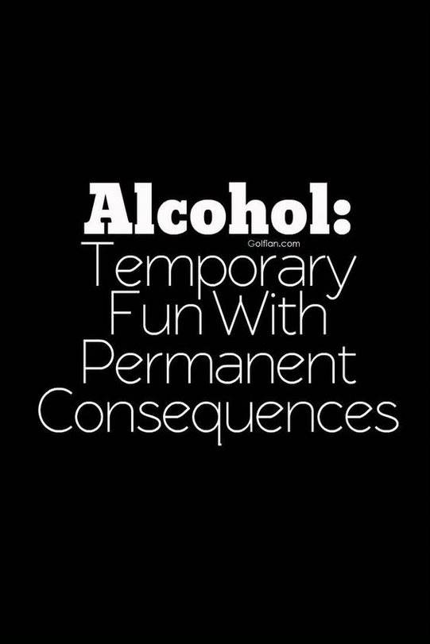

LONG TERM EFFECTS OF ALCOHOL
MENTAL HEALTH

Anxiety and depression: Alcohol can exacerbate or trigger anxiety and depressive disorders. Mood swings: Alcohol can alter mood, leading to irritability, aggression, or emotional instability. Trauma and PTSD: Alcohol can trigger or worsen post-traumatic stress disorder (PTSD) symptoms.
LIVER

Alcoholic cirrhosis: Scarring of the liver, leading to liver failure. Liver fibrosis: Formation of excess connective tissue Liver cancer: Increased risk of hepatocellular carcinoma. Liver failure: End-stage liver disease requiring transplantation.
GENETIC DISORDER

Chromosomal: This type affects the structures that hold your genes/DNA within each cell (chromosomes). With these conditions, people are missing or have duplicated chromosome material They include chemical exposure, diet, certain medications and tobacco or alcohol use. :This group of conditons occurs from a single gene mutation.
Discover the Importance of Alcohol Awareness
Alcohol awareness is vital for several reasons: It highlights the health risks associated with drinking, helps prevent abuse by educating people about addiction signs, and empowers individuals to make informed choices regarding their consumption. Awareness programs particularly protect youth from underage drinking and create a supportive environment for those struggling with alcohol use disorder, reducing stigma. Additionally, informed communities experience fewer alcohol-related incidents, and recognizing the connection between alcohol and mental health encourages healthier coping mechanisms. Overall, promoting alcohol awareness fosters a healthier society focused on well-being.
HERE ARE SOME PEOPLE WHO HAVE AFFECTED BY ALCHOL AND OVERCAME FROM IT
ROBERT DOWNEY JR
Robert, a young actor, struggled with drug addiction. Despite facing challenges and setbacks, he eventually overcame his addiction with perseverance and sought help. Through his journey, Robert demonstrated that it is possible to change and achieve success even in the face of adversity.
SELENA GOMEZ
Gomez has been candid about her past struggles with alcohol, particularly during her teenage years and early adulthood. She acknowledged using alcohol as a coping mechanism but has since prioritized her mental health and well-being. In interviews, she has emphasized the importance of therapy and self-care, encouraging others to seek help and break the stigma surrounding mental health and addiction.
FICTIONAL CHARACTER: JD
"Master," JD, played by Vijay, is an alcoholic professor whose journey with alcohol is central to his character development. Initially, his alcoholism serves as a coping mechanism for his traumatic past and professional failures but however he managed to move on from alcohol